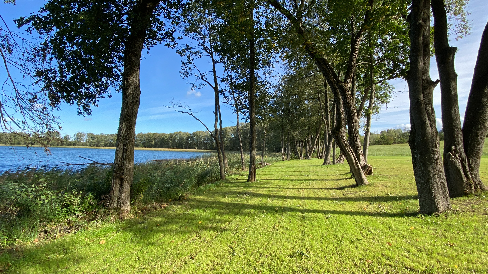
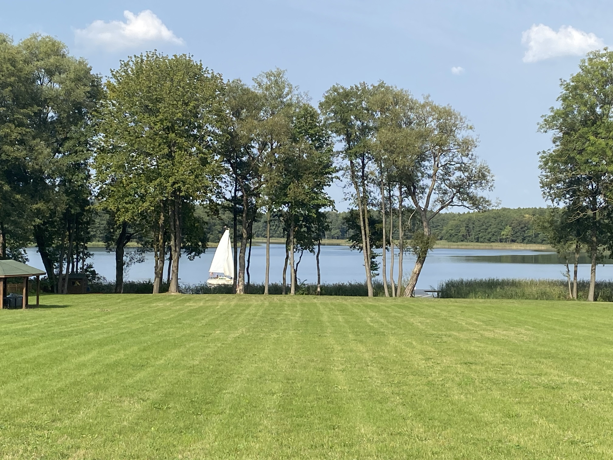
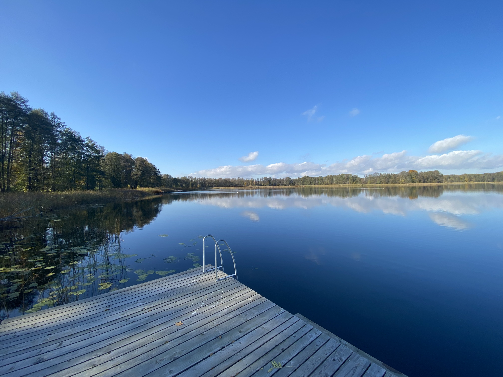
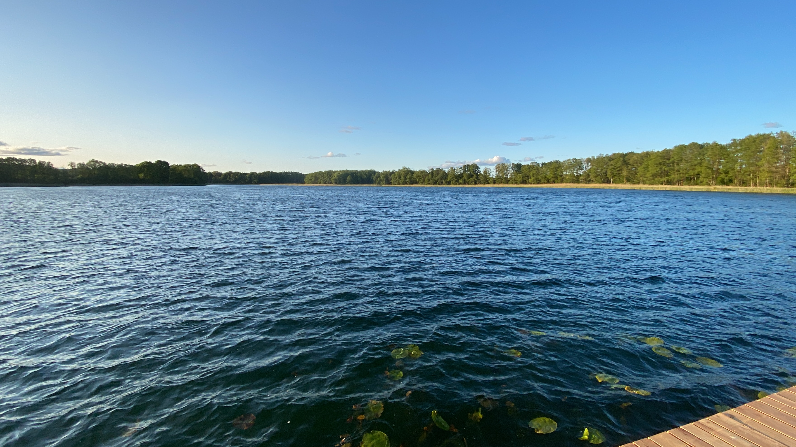
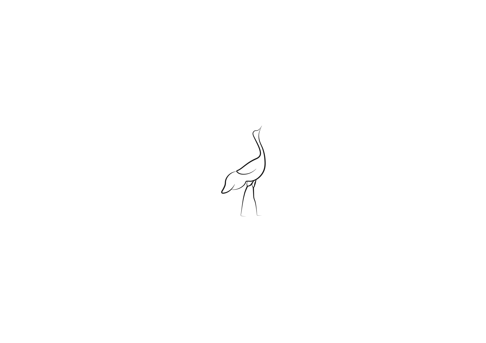
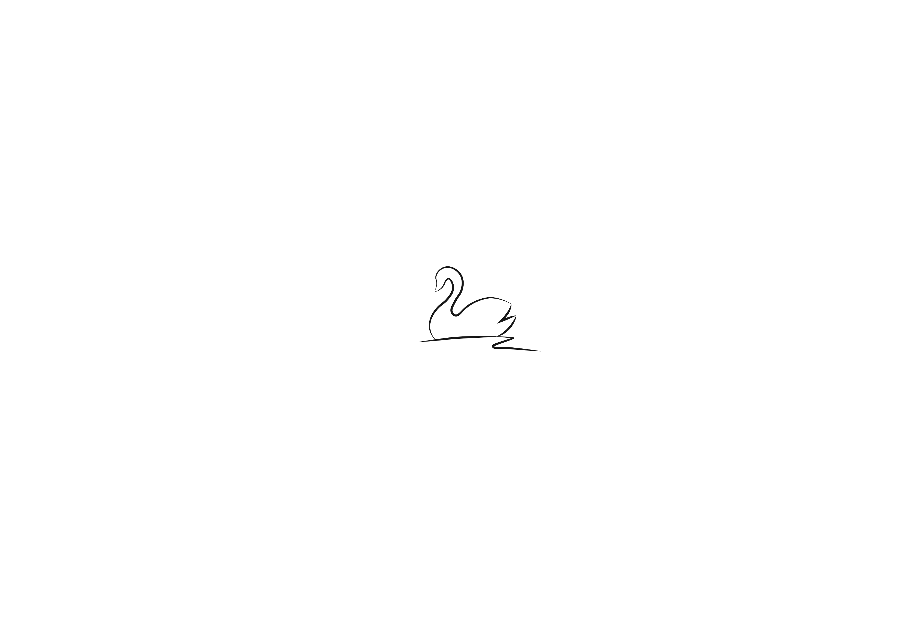

Cerkiewnik położony jest w samym centrum historycznej Warmii, a nasze domy znajdują się na Obszarze Chronionego Krajobrazu Doliny Środkowej Łyny oraz na terenie zespołu przydoniczo-karajobrazowego „Jazioro Limajno i okolice”.
Warmia: Atrakcje, zabytki, ciekawe miejsca. Co warto zwiedzić i zobaczyć? Więcej informacji
Masz pytania? Skontaktuj się z nami, a chętnie pomożemy Ci zaplanować idealny wypoczynek.